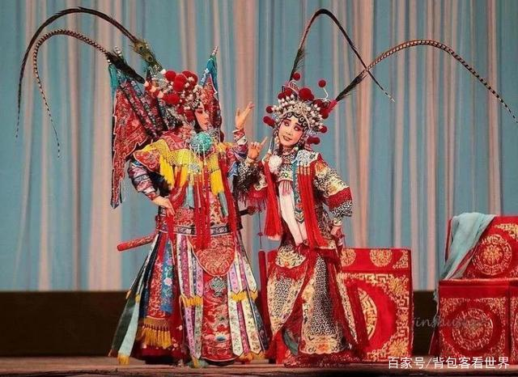

2020-09-28 18:37 背包客看世界
众所周知，基建实力除了工程的建设，还需要各种先进的设备来配合才能实现的，我们国家在基建上从来没有认输，最近“基建狂魔”再上新，这次的造型是真的绝了，只要你看到，你一定会认出来我国的传统文化，我国的网友表示：这是我国科技与文化的碰撞。
中国文化有几千年的历史发展，可以说有着深厚的文化和文明，很多人终其一生也没有将中国文化完全参透，其实很多的外国人在了解中国文化后，都会被中国文化所吸引，还有很多人因为中国文化而选择到中国生根，可见中国文化充满了魅力和诱惑。
其实这么多年来我国在基建上的实力在世界上都是有目共睹的，大家也都知道世界上很多国家都有中国基建的痕迹，这就是对中国基建的认可，要知道很多的基建都是在环境极其恶劣的环境中完成的，要么就是基建的难度非常大，但是我们国家从来没有退缩，只要是找我们帮忙的，不管多难我们都会做到最好，所以基建的能力也是越来越强，光有基建的能力，没有设备的支持怎么可以。
所以很多的基建设备在我国的工程师手中被一一生产出来，大家也都知道，在十几年前，一台盾构机将我国的工程师难住了，那个时候我们还是在德国进口的，但是德国技术方面一点都不让我国知道，当时也是受尽了脸色，但是我们从零开始将这个硬骨头啃了下来，当时连刀片都不知道该用哪种，到后来不管任何地形都难不倒我国的盾构机，我国的盾构机已经有很多的类型，大的小的都有。
而最新的盾构机造型让人眼前一亮，不知道大家有没有关注我国盾构机的消息，我国盾构机造型被玩出了花，不但有红的，蓝的，绿色的，彩色的，还有脸谱的，大家也都知道京剧脸谱是具有中国文化特色的一种特殊的化妆方法，可以说是我国传统文化中的代表，而我国这台盾构机采用的也是代表忠勇义烈的红色。
这是也是我国传承了几千年的美德，看到这样的机器，真想说一句，只有中国制造才能做到如此完美的设备，只有中国人才懂这其中的意义，现在我国的科技已经十分先进了，可以说别人没有的我们都有，别人有的我们比他们的更好，这样的实力叫我怎么低调，现在脖子已经很粗，别人再想卡脖子，也没有那么大的实力。